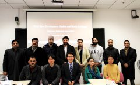
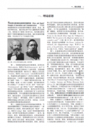

新闻动态更多 >

人大新闻学院2019年新年报告会：传承创新推进“双一流”建设1月2日，中国人民大学新闻学院教职工系着红围巾，拍下了2019年的第一张全家福。在当天举行的2019年...
- [2019.01.09] 双一流建设 | 人大新闻深研会第12期：北京地区新闻从业人员专业意识动态调查报告发布
- [2019.01.09] 中国新闻史学会京津冀常务理事工作会（2019）召开
- [2018.12.26] “双一流”建设 |如何打造新一代新闻传播课程体系？ 人大新闻学院核心与特色课程创新计划首期结项
- [2018.12.26] 张辉锋教授获评2018年宝钢教育基金优秀教师奖
- [2018.12.26] 人大新闻学院博士生何天平获范敬宜新闻教育奖学子奖
- [2018.12.24] 人大新闻学院与北大方正合作共建 智慧媒体未来实验室成立启动
- [2018.12.21] 如何甄别与管控公共领域虚假信息？人大新闻学院研究课题结项
- [2018.12.19] 改革开放40周年 | 重大历史关头他们撰文发先声 人大新闻学院校友胡福明、陈锡添回校话春风
国际交流更多 >

2018年度巴基斯坦青年记者访华交流项目在人大新闻学院开班11月26日下午，2018年巴基斯坦青年记者访华短期交流项目在中国人民大学新闻学院开班，来自巴基斯坦主流媒体的10名记者将在中国展开为期7天的交流活动。
- 格鲁吉亚《回声报》总编访问人大新闻学院[10.04]
- 会议 | 中外新闻传播学院院长共议 万物互联与泛...[10.26]
- “一带一路”沿线调研│ 俄罗斯媒体对外传播：...[09.05]
- “一带一路”沿线调研 | 波罗的海明珠：不仅要...[09.05]
- “一带一路”沿线调研 | 华为在俄二十年：中国...[09.05]
学术科研更多 >

陈力丹教授四部“马克思主义新闻观”新著即将出版今年正值马克思诞辰二百周年，全国新闻院校掀起了学习马克思主义新闻观的热潮。作为长期耕耘于马克思主义新闻观领域的知名学者，陈力丹教授主编的《马克思主义新闻观百科全书》、《人所具有的我都具有：马...
- “新闻传播业的变革：历史与现实”会议及征文通...[06.12]
- 高钢、彭兰教授参加“中国互联网新闻·十年”论...[05.27]
- 敬一丹来我院做《电视新闻下的变与不变》讲座...[03.09]
- 杨保军教授参加南大新闻传播学院“博士之家学术...[05.27]
- 张辉锋副教授参加“融媒体背景下传媒商业模式创...[05.27]